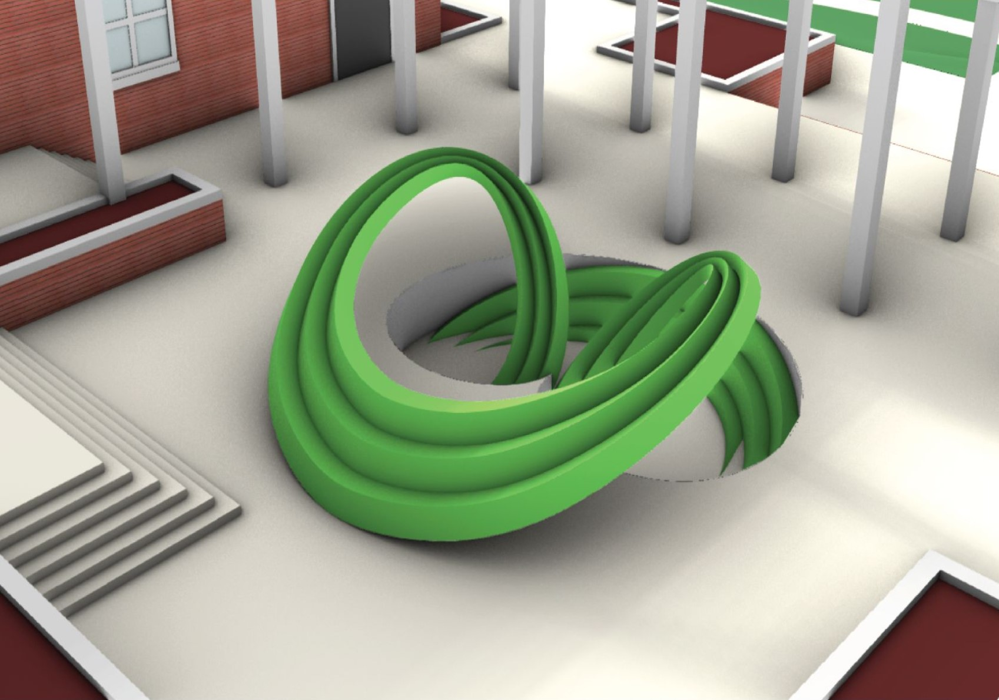
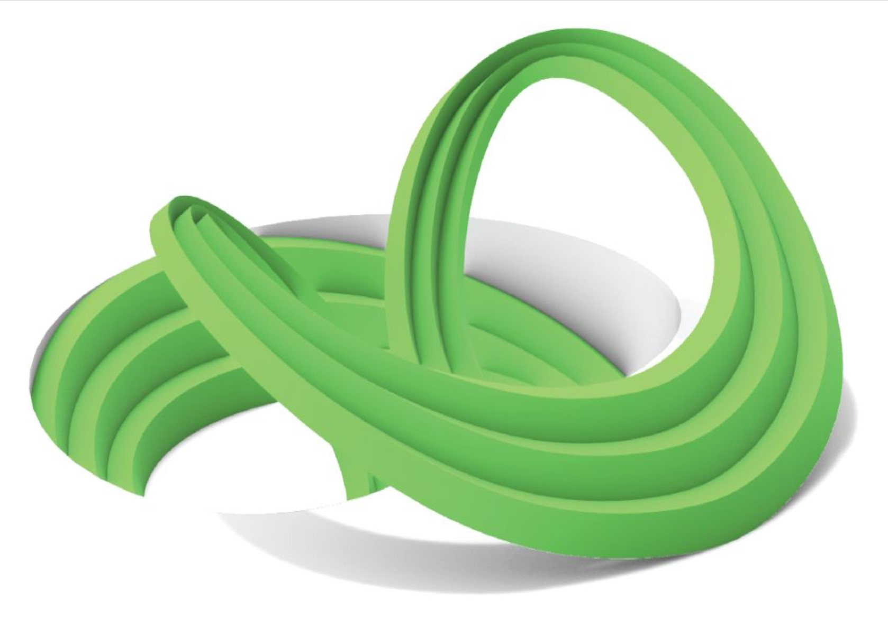
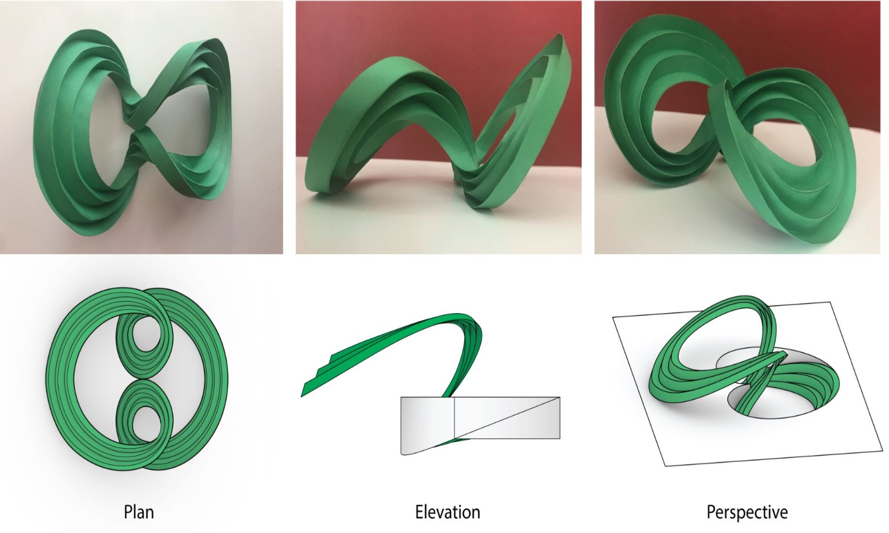

Courtyard Pavilion
- Medium
- Cardstock, Rhinoceros
Using precedents such as “Dodecahedron II” by Richard Sweeny, and exploring curved paper folding, I constructed a twisted form using a singular sheet of paper. I played with its composition to create a pavilion for the architecture lecture hall courtyard. I scored cardstock in circles and accordion-folded the rings. The form curved in on itself and I looped it around to turn into this form. After 3D-modeling it on Rhinoceros, I configured it such that it could be both seating for passing students and an outdoor lecture hall for classes.


